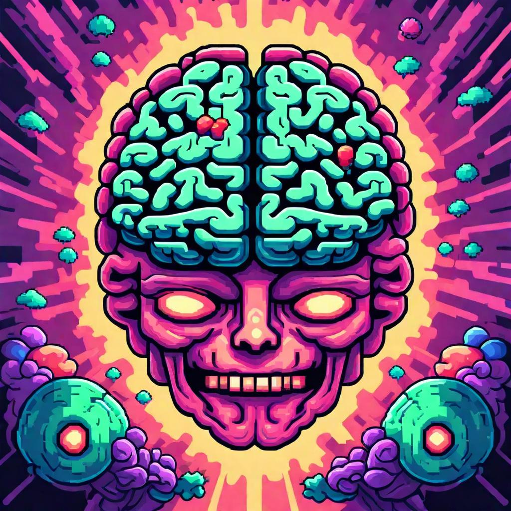

The Neurochemistry of 5-MeO-DMT: What Happens in Your Brain
Introduction
5-MeO-DMT (5-methoxy-N,N-dimethyltryptamine) is a powerful psychedelic compound known for its rapid onset and intense effects. Often referred to as the "God molecule," 5-MeO-DMT induces profound alterations in consciousness. This article explores the neurochemical mechanisms underlying its effects, shedding light on what happens in your brain during a 5-MeO-DMT experience.
Understanding 5-MeO-DMT
1. Chemical Structure
5-MeO-DMT belongs to the tryptamine class of psychedelics, sharing structural similarities with serotonin (5-HT), a key neurotransmitter involved in mood, cognition, and perception. This structural similarity allows 5-MeO-DMT to interact with the brain's serotonin receptors.
2. Routes of Administration
5-MeO-DMT can be administered in several ways, including smoking, vaporizing, or insufflation. The route of administration affects the onset and intensity of its effects, with smoking and vaporizing leading to rapid and intense experiences.
Neurochemical Mechanisms
1. Serotonin Receptors
5-MeO-DMT primarily interacts with serotonin receptors, particularly the 5-HT2A and 5-HT1A receptors:
- 5-HT2A Receptor Agonism: Activation of the 5-HT2A receptors is associated with the psychedelic effects of 5-MeO-DMT. This interaction leads to altered sensory perception, changes in thought patterns, and the profound mystical experiences reported by users.
- 5-HT1A Receptor Agonism: The activation of 5-HT1A receptors is linked to mood regulation and anxiolytic effects, which may contribute to the emotional release and catharsis experienced during a 5-MeO-DMT journey.
2. Dopamine and Other Neurotransmitters
While 5-MeO-DMT's primary action is on the serotonin system, it also affects other neurotransmitter systems:
- Dopamine Release: There is evidence suggesting that 5-MeO-DMT can stimulate dopamine release, contributing to feelings of euphoria and heightened emotional responses.
- GABA and Glutamate Modulation: 5-MeO-DMT may influence the balance between excitatory (glutamate) and inhibitory (GABA) neurotransmitters, affecting overall brain activity and consciousness.
3. Brainwave Activity
Studies on brainwave activity during psychedelic experiences have shown that 5-MeO-DMT can induce significant changes in neural oscillations:
- Increased Gamma Waves: Gamma wave activity is often associated with heightened cognitive function and consciousness. 5-MeO-DMT has been found to increase gamma wave activity, correlating with the intense and transformative nature of the experience.
- Decreased Alpha Waves: A reduction in alpha wave activity, typically linked to relaxation and calm states, may also occur, reflecting the heightened sensory and emotional arousal during the journey.
Effects on Brain Regions
1. Default Mode Network (DMN)
The Default Mode Network (DMN) is a network of brain regions associated with self-referential thinking and the sense of self:
- DMN Disruption: 5-MeO-DMT disrupts the DMN, leading to a breakdown of the ego and self-identity. This disruption is believed to be responsible for the experiences of ego dissolution and unity with the universe commonly reported by users.
2. Prefrontal Cortex
The prefrontal cortex is involved in higher-order cognitive functions, including decision-making, self-control, and introspection:
- Altered Activity: 5-MeO-DMT affects the activity of the prefrontal cortex, potentially enhancing introspective insights and altering the perception of time and space.
3. Thalamus
The thalamus acts as a relay station for sensory information, filtering and directing it to appropriate brain regions:
- Sensory Overload: 5-MeO-DMT can cause a flood of sensory information by modulating thalamic activity, contributing to the intense visual and auditory hallucinations experienced during the trip.
Psychological and Therapeutic Implications
1. Emotional Catharsis
The neurochemical effects of 5-MeO-DMT can lead to profound emotional release and catharsis, helping individuals process and integrate deep-seated emotions and traumas.
2. Mystical and Spiritual Experiences
The alteration of brain activity and neurotransmitter systems facilitates mystical and spiritual experiences, which can have lasting positive effects on individuals' mental health and well-being.
3. Potential for Therapy
5-MeO-DMT's ability to induce transformative experiences holds promise for therapeutic applications, particularly in treating conditions like depression, anxiety, PTSD, and substance abuse disorders.
Conclusion
The neurochemistry of 5-MeO-DMT involves complex interactions with serotonin receptors, modulation of other neurotransmitter systems, and significant alterations in brainwave activity and brain region function. These neurochemical mechanisms underlie the profound and transformative experiences reported by users, offering insights into the potential therapeutic benefits of this powerful psychedelic. Understanding these processes not only enhances our appreciation of 5-MeO-DMT's effects but also opens the door to exploring its use in clinical and therapeutic settings.